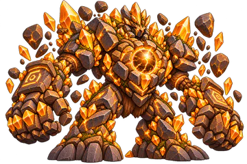
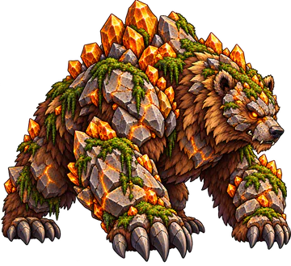
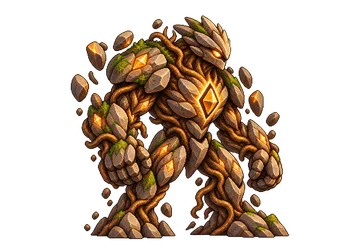
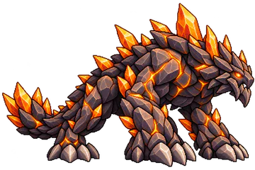

Elemental Knights › Elementos › Terra
Elemento
Terra
Ser uma fortaleza inabalável que controla a linha de frente e transforma resistência em vantagem. Quanto mais tempo permanece de pé e quanto mais pressão recebe, mais difícil se torna derrotá-lo.
Estratégia
Como jogar com a Terra
A Terra aguenta a pressão. A Defesa cresce durante a luta (Armadura de Terra, Rocha que Cresce, Casca Rochosa) e as barreiras seguram o dano (Manobras de Terra, Muralha Ascendente).
No ataque, empilhe Abalo com Tiro de Lama, Tremer a Terra e Abalo Sísmico até a Intensidade 5 e finalize com o Colapso, a Ultimate: 405% de dano num alvo com Abalo 5.

Contra RaioSuas Habilidades causam +50% de dano.

Contra NaturezaSuas Habilidades causam −50% de dano.
Na Estratégia Elemental você escolhe 2 Passivas e 3 Ativas da Terra, e a Ultimate ocupa um dos 3 lugares de Ativa. Lutar com a Terra aumenta a sua Maestria nela.
Efeito especial
Abalo
Abalo Intensidade I a V
Reduz a Defesa do alvo. Nos níveis altos, as habilidades dele demoram mais para recarregar.
Sempre ativas
As 6 Passivas
Funcionam sozinhas durante a batalha. Você leva 2 delas.
-
Armadura de Terra
- +5% de Defesa
- +5% de Defesa para cada inimigo vivo (máx. +25%)
-
Manobras de Terra
- No início da batalha, cria uma barreira com 40% da sua Vida Máxima e 70% da sua Defesa
- Os inimigos precisam destruir a barreira antes de atingir você com ataques diretos
- Ataques em área ignoram a barreira e atingem você normalmente
-
Lança de Terra
- Seus ataques básicos miram o inimigo mais distante
- Contra inimigos da Retaguarda, você ignora 20% da Defesa deles
-
Rocha que Cresce
- Sempre que sua Barra de Ação enche: +1% de Defesa
- Acumula até 15 vezes (máx. +15%)
-
Casca Rochosa
- Sempre que sofrer dano direto: +2% de Defesa por 8 s
- Acumula até 10 vezes (máx. +20%)
-
Tremor
- A cada 5 ataques diretos recebidos, seu próximo ataque causa +50% de dano
- Esse ataque também reduz a Defesa do alvo em 15% e a Velocidade em 12% por 5 s
Você decide a hora
As 8 Ativas
Entram na Fila de Habilidades e são usadas quando a Barra ATB enche. Você leva 3, incluindo a Ultimate.
-
Colapso Ultimate
- Causa 220% do Ataque em 1 inimigo
- Se o alvo estiver com Abalo 5: consome todo o Abalo e causa +185% (total 405%)
Recarga: 18 s
-
Corpo de Pedra Sobrevivência
- Por 20 s: +22% de Defesa
- Nesse tempo, nenhum efeito consegue mexer na sua Barra de Ação
Recarga: 14 s
-
Rolo Compressor Dano Bruto
- Causa 170% do Ataque em 1 inimigo (270% se ele estiver com Abalo)
- Empurra o alvo: ele perde 25% da Barra de Ação
Recarga: 10 s
-
Tiro de Lama Aplicadora de Abalo
- Causa 140% do Ataque em 1 inimigo
- Aplica 1 Intensidade de Abalo (garantida)
Recarga: 8 s
-
Tremer a Terra Espalhar Abalo
- Causa 100% do Ataque em todos os inimigos
- Aplica 1 Intensidade de Abalo em todos (garantida)
Recarga: 14 s
-
Abalo Sísmico Acelerar Abalo
- Causa 180% do Ataque em 1 inimigo (225% se ele já estiver com Abalo)
- Aplica 2 Intensidades de Abalo (garantidas)
Recarga: 12 s
-
Muralha Ascendente Proteção
- Cria um escudo com 25% da sua Vida Máxima por 15 s
- Enquanto o escudo durar: +10% de Defesa
Recarga: 12 s
-
Prisão Rochosa Controle
- Causa 115% do Ataque em 1 inimigo (170% se ele estiver com Abalo)
- Aplica 1 Intensidade de Abalo (garantida)
- O alvo perde 20% da Barra de Ação
Recarga: 15 s


Bestiário
Monstros da Terra
Para enfrentá-los, entre com a Natureza. Os 11 monstros da Terra em Entherya, do mais forte ao mais fraco:

Guardião do Núcleo Terrestre
Tier 7 · Chefe da etapa 3-5

Urso das Montanhas
Tier 6 · Chefe da etapa 3-1

Elemental de Terra
Tier 6 · Chefe da etapa 3-4

Dragão Rochoso
Tier 6 · Chefe da etapa 1-2
- Golem de Pedra Rachada T7
- Guardião do Núcleo Terrestre T7 · Chefe 3-5
- Dragão Rochoso T6 · Chefe 1-2
- Elemental de Terra T6 · Chefe 3-4
- Urso das Montanhas T6 · Chefe 3-1
- Águia de Pedra T5
- Escaravelho de Granito T4
- Tatu de Pedra T3
- Cachorro Rochoso Filhote T2
- Margarida Broto T1
- Porco de Lama T1
Perguntas frequentes
Terra: dúvidas comuns
Qual Elemento vence a Terra em Elemental Knights?
A Natureza vence a Terra: as habilidades da Natureza causam +50% de dano contra ela. Já as habilidades da Terra causam −50% contra a Natureza.
Contra qual Elemento a Terra é forte?
A Terra vence o Raio: suas habilidades causam +50% de dano contra inimigos do Raio.
O que faz a Abalo?
A Abalo é o efeito da Terra, com Intensidade de I a V. Reduz a Defesa do alvo. Nos níveis altos, as habilidades dele demoram mais para recarregar.
Qual é a Ultimate da Terra?
Colapso: Causa 220% do Ataque em 1 inimigo; Se o alvo estiver com Abalo 5: consome todo o Abalo e causa +185% (total 405%); Recarga: 18 s.
Em quais mapas a Terra fica mais forte?
Arredores do Reino, Ruínas no Deserto, Floresta de Pinheiros na Neve, Mina de Metal Magnetizado: nesses terrenos a Terra causa +10% de dano e tem +2% de chance de aplicar Abalo.
Quais Chefes são da Terra?
No Modo História: Dragão Rochoso (etapa 1-2), Urso das Montanhas (etapa 3-1), Elemental de Terra (etapa 3-4), Guardião do Núcleo Terrestre (etapa 3-5).
Os seis Elementos
Conheça os outros


Escolha o seu Elemento
Elemental Knights é um RPG de estratégia para Android, grátis, em pixel art. As novidades e os convites para testar o jogo saem primeiro no Instagram.